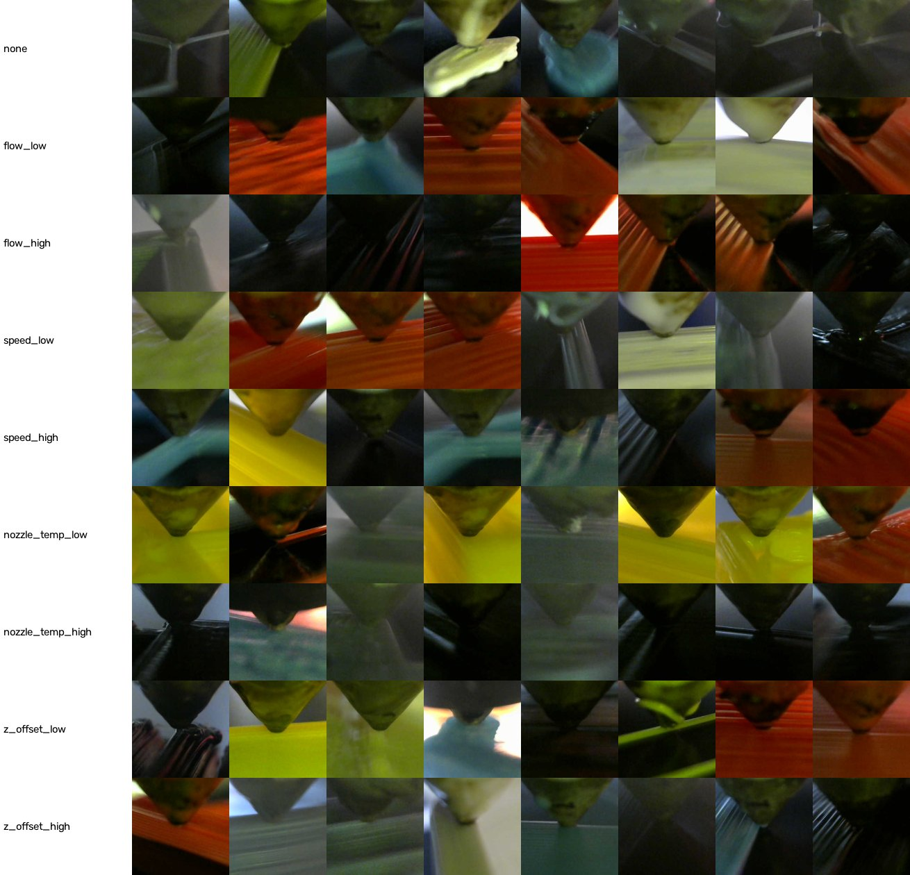
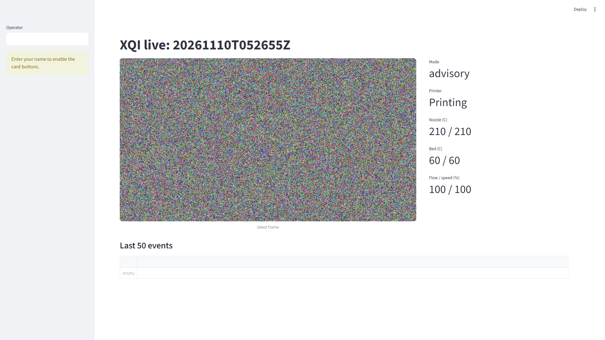
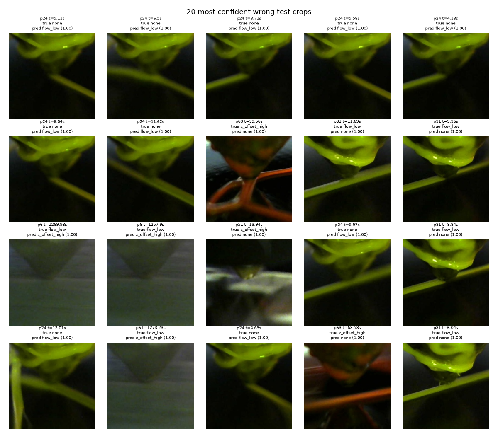

Frame 1
Representative crop of the true cause from reports/img/crop_sheet.jpg, not this frame: the crops are not on the dev machine.
A printer that sees a defect should name the setting that caused it, propose a bounded fix and let a person decide.

The inherited CARR loop finds 7 defect classes with YOLO and answers each with fixed G-code or an emergency stop (M112). It does not bound or scale its corrections, and it never asks a person first.
“Explainable: Absent. Recommendations: Absent. Safe: Partial.”
The CARR 4.1.3 deck, rating the current loop.
Each change pushed from nominal setpoints through the gate (reports/recipe_audit.md). Red = what baseline mode would send past a limit.
Flow, speed, nozzle temperature and z-offset each go low or high. A defect label collapses all of them into one word; a cause label keeps the variable and the sign, which is exactly what a correction needs.
CauseModel.predict takes only the crop.Counts from the data audit (79,515 images, 181 prints). Z-offset has no G-code fix, so it becomes manual advice.
Each metric can fail and has a script that measures it. Status chips below are computed from the results block at the bottom of this page.
Why: the inherited REU data turned out to be 5,490 unlabelled frames of one print. CAXTON (1.27 M parameter-labelled images, 192 parts) replaced it.
Select any stage to see what it does, the file that implements it and its tickets. The orange square is a frame moving through the loop.
Saved per-frame probabilities from the cause model, pushed through the project's own conformal, early-warning, counterfactual and gate functions. Nothing on this panel is simulated except the operator.
Representative crop of the true cause from reports/img/crop_sheet.jpg, not this frame: the crops are not on the dev machine.
Every ticket on the board, grouped by module. Hover a chip for its title and status.

Loop and UI run as separate processes and share one SQLite store (WAL), so every stage is also an audit log. Proposal cards add the crop, heatmap, cause set and the gated G-code with approve, modify and reject.
The card screenshot is being retaken: the 11-10 capture timed out before the card rendered (T-0038).
Data, safety and robustness results are in and passing. The model-dependent results wait on the complete-data fine-tune.
Single-cause images per cause. Rule: at least 200 images in at least 5 prints for 4 or more setpoint causes.
Random proposals, episodes of 10 with sequential dispatch (NFR-004, seed 0).
Raw recipe value vs what the gate lets through. Baseline mode would send the raw value.
Replay + FakePrinter, simulated operator (NFR-008).
No crash, RSS growth within limit, no pending events left.
These need a cause model that has passed K2. Each tile fills itself from the results block when the GPU sitting lands, and turns PASS or FAIL against its target.
Every FR and NFR mapped to PASS, FAIL or NO DATA with evidence (scripts/acceptance.py). NO DATA rows wait on the sitting reports.
K2 fires when leave-prints-out top-1 is at or below the floor + 5 pp. It has fired on every run so far. We show all of them.
5-fold leave-prints-out mean. Each run is compared with the floor on its own test images: the fine-tune on incomplete data had a floor of 0.625, the complete data a floor of 0.254.
Mean recall over the 9 causes. Always-majority scores 1/9. The signal exists, but it is weak.
Same frozen probe, fold-0 calibration prints (reports/cause_diagnostics.md). When train and test share prints it looks twice as good.
Ruled out: crop bug (crops correct), label lag (+1.2 pp at most), colour shortcut (grayscale 0.207 vs 0.211).
Fold-0 fine-tune, 11-11 run. Train accuracy climbs while calibration loss bottoms early and rises; across folds the best calib loss came in epochs 1 to 4.
The 11-11 fine-tune trained on the crops that existed at the time.
Per-cause recall, 11-11 fine-tune, pooled over folds. The model mostly says z_offset_high.
CAXTON's 84.3% splits individual images at random (70/20/10), so neighbouring frames of one print sit on both sides. It is not comparable with our numbers.
The 84.3% is roughly the mean of four per-parameter heads (flow 87.1, speed 86.4, Z 85.5, hotend 78.3), measured with post-change frames removed.

Confident mistakes cluster by print: one print's look gets mapped to one cause. The reviewer noted errors at parameter transitions, a subtle visual difference between under-extrusion, speed and z-offset, and a heavy bias toward z_offset_high.
This matches the diagnosis: per-print appearance (geometry, layer texture, lighting, filament colour) dominates the features a model can pick up from 181 prints.
The build plan (reports/FFF cause model build plan.md) turns the fix into gates, each with its own go/no-go rule, run in order instead of tuning everything at once.
0 violations in 100,000 random gate cases. Early warnings are never auto-applied.
K2 has fired twice. We report the floor, the chance level and the missing literature bar.
The complete-data fine-tune (G1) settles K2. Both outcomes have a written next step.
Sources: project-context/ (charter, ADRs, STATE, BOARD, LOGBOOK) and reports/. Data as of . Dataset: CAXTON, Brion and Pattinson, Nat. Commun. 13 (2022), CC BY 4.0.